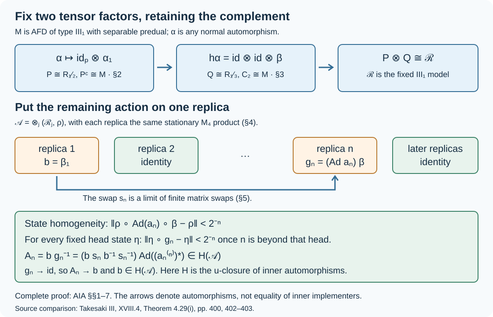

Approximately inner automorphisms of the type III₁ factor
Every normal automorphism of an approximately finite-dimensional type III₁ factor with separable predual is approximately inner. We prove this by fixing two Powers tensor factors, placing the remaining action in one of countably many identical factors, and moving a state-corrected copy of that action to infinity. The state correction is essential: commuting with every fixed finite tensor block does not imply convergence in predual norm.
The source theorem is M. Takesaki, Theory of Operator Algebras III, XVIII.4, Theorem 4.29(i), printed page 400, with proof on pages 402–403. The proof below specifies the tensor complements, implements the replica permutations by finite matrix unitaries, and gives the normal-functional estimates and a sequence of inner approximants. Its state-homogeneity input is the complete earlier programme proof built from Connes and Størmer's freely readable paper. The centrally trivial classification in part (ii) is a separate obligation.
1. Topology, transport and the closed normal subgroup
For a von Neumann algebra \(M\), let \(\operatorname{Aut}(M)\) denote its normal star automorphisms. We use the u-topology:
\[ \alpha_n\longrightarrow\alpha \quad\Longleftrightarrow\quad \|\psi\circ\alpha_n-\psi\circ\alpha\|\longrightarrow0 \quad(\psi\in M_*). \tag{AIA.1} \]Write \(\operatorname{Ad}u(x)=uxu^*\), and let
\[ H(M)=\overline{\operatorname{Int}(M)}^{\,u} \tag{AIA.2} \]inside \(\operatorname{Aut}(M)\). Membership in this closure is approximate innerness.
The complete topology and implementation proof is The precise topology of a standard implementation. We retain the relevant estimates. Inversion is continuous because
\[ \|\psi\circ\alpha_n^{-1}-\psi\circ\alpha^{-1}\| =\|\psi-\psi\circ\alpha^{-1}\circ\alpha_n\|\longrightarrow0. \tag{AIA.3} \]For products, insert \(\psi\circ\alpha\circ\beta_n\) between \(\psi\circ\alpha_n\circ\beta_n\) and \(\psi\circ\alpha\circ\beta\); composition with \(\beta_n\) is a predual isometry. These two observations prove continuity of the group operations. Since
\[ \gamma\circ\operatorname{Ad}u\circ\gamma^{-1} =\operatorname{Ad}(\gamma(u)), \tag{AIA.4} \]\(H(M)\) is a closed normal subgroup. A normal isomorphism carries it onto the corresponding subgroup of the target: the isometric predual pullback carries every test in (AIA.1) onto a test of the same kind, and (AIA.4) transports inner automorphisms.
Tensoring an automorphism with the identity defines a normal automorphism of the spatial tensor product. For example its standard implementer from CL-01, tensored with the identity Hilbert unitary, implements the extension and its inverse. If \(\alpha_n\to\alpha\), the identity extensions also converge in (AIA.1). On product normal functionals this follows by tensoring the predual difference; finite sums of product functionals are norm dense by Every tensor vector is a summable vector series through The concrete predual and its intrinsic norm. One can see the density directly: approximate both vectors of a coefficient on the tensor Hilbert space by finite sums of elementary tensors, then use the summable vector-coefficient description of CP-06. Common norm bounds extend convergence from this dense family to the entire predual. In particular an approximately inner automorphism extends to an approximately inner automorphism.
When \(M_*\) is separable, closure in (AIA.2) is realized by sequences. Choose \((\psi_j)\) with norm-dense complex span. For each \(n\), the definition of closure supplies an inner automorphism satisfying any prescribed positive error on \(\psi_1,\ldots,\psi_n\). Errors tending to zero, followed by density and the predual isometry bound, give convergence on all of \(M_*\). This is a finite-test diagonal argument, not an assumption of norm convergence of the automorphisms as bounded maps.
2. Fix a Powers factor and retain the complement
Let \(M\) be an AFD factor of type \(\mathrm{III}_1\) with separable predual, and let \(\alpha\in\operatorname{Aut}(M)\). Fix \(0<\lambda<1\). The earlier absorption theorem 5. Strong λ-stability of an AFD type III₁ factor supplies a normal identification
\[ M=R_\lambda\overline\otimes C,\qquad C\cong M. \tag{AIA.5} \]This is an actual identification, not cancellation of a tensor factor. Take the stationary matrix generators \(e_{ij}(k)\) of the first factor in the order
\[ p_1=\frac1{1+\lambda},\quad p_2=\frac\lambda{1+\lambda}, \qquad \|\psi e_{ij}(k)-\lambda^{i-j}e_{ij}(k)\psi\|\longrightarrow0. \tag{AIA.6} \]The defect statement on the entire ambient predual is proved in 7. A corrected tensor-factor conjugacy statement: it is exact on sufficiently late legs for local product-state coefficients, and those coefficients and complement functionals have norm-dense span. Our module actions are \((x\psi)(z)=\psi(zx)\), \((\psi x)(z)=\psi(xz)\). Thus the weight in (AIA.6) is \(p_i/p_j\), with no reversal of the two diagonal weights.
The family \(f_{ij}(k)=\alpha(e_{ij}(k))\) also satisfies (AIA.6). Indeed pull a test functional back by \(\alpha\) and then compose its weighted difference with \(\alpha^{-1}\); the norm is unchanged. Each family commutes internally, as required by the weighted matching theorem, 1. The weighted matching problem through 5. A two-sided limit is an automorphism. That theorem gives \(\sigma\in H(M)\) and indices \(k_n\) with
\[ \sigma(e_{ij}(k_n))=\alpha(e_{ij}(k_n)). \tag{AIA.7} \]We may require \(k_n>k_{n-1}+1\). At every stage WMC-03 selects a coordinate beyond an arbitrary cutoff, and WMC-04–05 preserves all previous matches. Choosing this larger cutoff leaves an infinite complement to \(K=\{k_n:n\ge1\}\).
Let \(P\) be generated by the selected legs. Product reindexing gives the exact complement
\[ \begin{aligned} P&\cong R_\lambda,\\ P'\cap M&=R_{\lambda,\mathbb N\setminus K}\overline\otimes C \cong R_\lambda\overline\otimes C\cong M,\\ M&=P\overline\otimes(P'\cap M). \end{aligned} \tag{AIA.8} \]For the product isomorphisms, enumerate the two infinite coordinate sets. The maps on finite-support pointed tensors preserve all inner products and have dense range, so they extend to onto Hilbert unitaries and identify the generated von Neumann algebras normally; see 2. The specified Powers product and Units, reference vectors and GNS kernels, Tail expectations and the full commutant. Normal slices separate the tensor factors, so factoriality of \(P\) gives the asserted commutant. The last isomorphism in the second line uses (AIA.5) transported through \(C\cong M\).
Now \(\sigma^{-1}\alpha\) fixes every generator of \(P\), hence fixes \(P\) pointwise by normality. It maps \(P'\cap M\) onto itself: apply it and its inverse to the commutation relation with every element of \(P\). Consequently
\[ \sigma^{-1}\alpha=\operatorname{id}_P\otimes\alpha_1 \quad\text{on }M=P\overline\otimes(P'\cap M), \tag{AIA.9} \]where \(\alpha_1\) is a normal automorphism of a factor isomorphic to \(M\). Equality follows first on elementary tensors and then on their ultraweakly dense span. This proves the reduction with its complement fully retained. The unrestricted tensor-factor conjugacy claim refuted in WMC-07 is not used.
3. Two fixed Powers factors give a fixed type III₁ factor
Apply Section 2 first with \(\lambda=1/2\). Apply it again inside \(P'\cap M\cong M\), to \(\alpha_1\), with \(\mu=1/3\). The second approximately inner perturbation extends through the identity on \(P\), by Section 1. We obtain a product decomposition and an element \(h\in H(M)\) such that
\[ \begin{aligned} M&=P\overline\otimes Q\overline\otimes C_2,\\ P&\cong R_{1/2},\quad Q\cong R_{1/3},\quad C_2\cong M,\\ h\alpha&=\operatorname{id}_{P\overline\otimes Q}\otimes\beta, \qquad \beta\in\operatorname{Aut}(C_2). \end{aligned} \tag{AIA.10} \]Specifically, if \(\tau\) is the matching automorphism in the second application, then \(h=(\operatorname{id}_P\otimes\tau^{-1})\sigma^{-1}\). Both factors lie in \(H(M)\).
The reference factor
\[ \mathcal R=R_{1/2}\overline\otimes R_{1/3} \tag{AIA.11} \]is AFD of type \(\mathrm{III}_1\) with separable predual by 6. A reference factor and tracial stability, using the full irrational-product proof given there. The logarithm ratio is irrational: \(\log2/\log3=a/b\) with positive integers would give \(2^b=3^a\), contradicting parity. The uniqueness proof 11. The three-factor comparison and uniqueness identifies \(C_2\) and \(M\) normally with \(\mathcal R\).
It therefore remains to prove that \(\operatorname{id}_{\mathcal R}\otimes\beta\) is approximately inner on \(\mathcal R\overline\otimes\mathcal R\), for every automorphism \(\beta\) of the specified \(\mathcal R\). Transport of \(H\) through normal isomorphisms will then imply \(h\alpha\in H(M)\); multiplication by \(h^{-1}\) gives the theorem for \(\alpha\). The following sections establish this remaining assertion without presupposing approximate innerness of \(\beta\).
4. An exact product of identical replicas
Pair a matrix leg of \(R_{1/2}\) with a matrix leg of \(R_{1/3}\). After a fixed basis permutation, (AIA.11) becomes the stationary product
\[ (\mathcal R,\rho) =\bigotimes_{m\ge1}(M_4,\rho_0), \qquad \rho_0(x)=\operatorname{Tr}(d x),\quad d=\operatorname{diag}\left(\tfrac12,\tfrac14,\tfrac16,\tfrac1{12}\right). \tag{AIA.12} \]The four entries sum to one and are positive; they are the products of \((2/3,1/3)\) and \((3/4,1/4)\). The pointed tensor construction and normality are given in Units, reference vectors and GNS kernels. Faithful states and maximal modular domains proves faithfulness of the product state: the reference vector is cyclic for the local right algebras, so it is separating for the generated left algebra.
Make countably many copies \((\mathcal R_j,\rho_j)=(\mathcal R,\rho)\), and put
\[ (\mathcal A,\Phi)=\bigotimes_{j\ge1}(\mathcal R_j,\rho_j). \tag{AIA.13} \]Every matrix coordinate is now indexed by \((j,m)\in\mathbb N^2\), with the same density \(d\). A bijection \(\mathbb N^2\to\mathbb N\) induces a state-preserving normal isomorphism \((\mathcal A,\Phi)\cong(\mathcal R,\rho)\). Here is the complete passage: flatten a finite-support tensor of local matrix vectors into its enumerated coordinates. It preserves inner products. Such vectors span dense subspaces on both sides, by the pointed product definition, so the map extends to an onto Hilbert unitary. It intertwines every local matrix operator. Taking the generated von Neumann algebras proves the normal isomorphism and its inverse. Applying the same argument to \(\{j\ge2\}\times\mathbb N\) shows that the tail product is also \((\mathcal R,\rho)\).
We can thus identify the fixed copy of \(\mathcal R\) in Section 3 with the product of replicas \(j\ge2\), and the copy carrying \(\beta\) with replica 1. The reduced automorphism becomes
\[ b=\beta_1:=\beta\otimes\operatorname{id}\otimes\operatorname{id}\otimes\cdots \quad\text{on }\mathcal A. \tag{AIA.14} \]Only one factor is transformed, so the spatial extension of Section 1 defines it normally even if \(\beta\) fails to preserve \(\rho\). No infinite product of non-state-preserving automorphisms is being assumed.
5. Swapping two replicas is approximately inner
For \(n\ge2\), let \(s_n\) exchange replicas 1 and \(n\), fixing all others. Permuting the pointed tensor vectors gives its state-preserving normal implementation. We prove directly that
\[ s_n\in H(\mathcal A). \tag{AIA.15} \]For fixed \(m\), swap only the first \(m\) matrix coordinates of replicas 1 and \(n\). Their head algebras are both \(M_{4^m}\). With matrix units \(E_{ab}^{(1,m)}\) and \(E_{ab}^{(n,m)}\), the finite swap is implemented by
\[ v_{n,m}=\sum_{a,b=1}^{4^m} E_{ab}^{(1,m)}E_{ba}^{(n,m)}. \tag{AIA.16} \]The two head algebras commute. On elementary basis tensors this operator exchanges the basis vectors, so \(v_{n,m}=v_{n,m}^*\), \(v_{n,m}^2=1\), and its conjugation exchanges the two head matrices. It lies in the finite full matrix subalgebra of \(\mathcal A\). The two heads have the same density \(d^{\otimes m}\), so the swap preserves their product state and hence preserves \(\Phi\).
For local matrix tensors \(a,c\), define \(\Phi_{a,c}(x)=\Phi(c^*xa)\). If \(t\) preserves \(\Phi\), then
\[ \Phi_{a,c}\circ t =\Phi_{t^{-1}(a),t^{-1}(c)}. \tag{AIA.17} \]For all sufficiently large \(m\), \(\operatorname{Ad}v_{n,m}\) and its inverse agree with \(s_n=s_n^{-1}\) on both \(a,c\). Equation (AIA.17) makes the two pulled-back coefficient functionals exactly equal. These coefficient functionals have norm-dense complex span in \(\mathcal A_*\), since local vectors are dense and CP-04–06 gives the vector-coefficient error estimates. Since all predual maps have norm one, we obtain
\[ \operatorname{Ad}v_{n,m}\longrightarrow s_n \quad\text{in the u-topology as }m\to\infty. \tag{AIA.18} \]This proves (AIA.15) separately for each fixed \(n\). We have not claimed that \(s_n\) is inner, or that the unitaries \(v_{n,m}\) converge in the algebra.
6. Correct the state before moving the action to infinity
The earlier approximate unitary homogeneity theorem, HC1–7 proves that for any two normal states on a sigma-finite type \(\mathrm{III}_1\) factor and any \(\varepsilon>0\), a unitary conjugate of one is within \(\varepsilon\) of the other in predual norm. Its full proof constructs partial isometries in spectral corners, extends a maximal family, and completes it to a unitary with an explicit state error bound. The actual HC proof, with its named earlier programme inputs, is our prerequisite; its external citation is not used in place of a proof.
Apply it on \(\mathcal R\) to the faithful normal states \(\rho\) and \(\rho\circ\beta^{-1}\). Its convention \(\rho^v(x)=\rho(v^*xv)\) yields a unitary \(a_n=v_n^*\) such that, after composition with \(\beta\),
\[ \|\rho\circ\operatorname{Ad}a_n\circ\beta-\rho\|<2^{-n} \qquad(n\ge2). \tag{AIA.19} \]The change of orientation here is deliberate. Set \(\gamma_n=\operatorname{Ad}a_n\circ\beta\), and let \(g_n\) act by \(\gamma_n\) on replica \(n\) and by the identity on all other replicas. We claim
\[ g_n\longrightarrow\operatorname{id}_{\mathcal A} \quad\text{in the u-topology}. \tag{AIA.20} \]For a normal state \(\chi\) on the first \(N\) replicas, define the state
\[ \eta=\chi\otimes\bigotimes_{j>N}\rho_j. \tag{AIA.21} \]When \(n>N\), only the \(n\)-th factor changes, and
\[ \|\eta\circ g_n-\eta\| =\|\rho\circ\gamma_n-\rho\|<2^{-n}. \tag{AIA.22} \]To justify the equality, integrate all factors other than replica \(n\) against the fixed state \(\chi\) and their reference states. This gives a normal unital completely positive slice map \(E:\mathcal A\to\mathcal R_n\), with norm one, and the difference on the left is \((\rho\gamma_n-\rho)\circ E\). Hence its norm is at most the right side. Testing on the unit ball of the embedded \(\mathcal R_n\), which \(E\) fixes, gives the reverse inequality. The normal slice and expectation construction is Tail expectations and the full commutant.
States of the form (AIA.21) have norm-dense complex span in \(\mathcal A_*\). The head expectation from ITP-03 is \(E_N=\operatorname{id}_{\le N}\otimes\Phi_{>N}\), and \(\|\psi E_N-\psi\|\to0\) for every normal functional. Moreover \(\psi E_N\) is its normal head restriction tensored with \(\Phi_{>N}\). The positive functional decomposition in CP-04–06 writes that head restriction as a linear combination of normal states, omitting zero terms. Thus the claimed span is dense.
Explicitly, approximate a given \(\psi\) by \(\eta_0=\sum_{l=1}^r z_l\eta_l\), where all \(\eta_l\) have a common head cutoff \(N\). For \(n>N\), (AIA.22) gives
\[ \|\psi\circ g_n-\psi\| \le 2\|\psi-\eta_0\|+2^{-n}\sum_{l=1}^r|z_l|. \tag{AIA.23} \]First make the approximation error small, then take \(n\) large. This proves (AIA.20) on the entire predual. Inversion continuity (AIA.3) also proves \(g_n^{-1}\to\operatorname{id}\).
7. Remove the distant action and finish the theorem
Let \(\beta_n=s_n b s_n^{-1}\); it applies \(\beta\) on replica \(n\). Because \(s_n\in H(\mathcal A)\) and this subgroup is normal, the commutator
\[ c_n=b s_n b^{-1}s_n^{-1}=b\beta_n^{-1} \tag{AIA.24} \]belongs to \(H(\mathcal A)\). The equality is obtained by substituting \(\beta_n^{-1}=s_n b^{-1}s_n^{-1}\); the two copies of \(\beta\) act on different replicas. Let \(a_n^{(n)}\) denote the unitary \(a_n\) in replica \(n\). By construction,
\[ g_n=\operatorname{Ad}(a_n^{(n)})\,\beta_n, \qquad A_n:=b g_n^{-1} =c_n\operatorname{Ad}((a_n^{(n)})^*)\in H(\mathcal A). \tag{AIA.25} \]Both the order and the adjoint in the second identity matter. Section 6 gives \(g_n^{-1}\to\operatorname{id}\), so multiplication continuity yields \(A_n\to b\). Closedness of \(H(\mathcal A)\) proves \(b\in H(\mathcal A)\).
There is also a direct sequence of inner implementers. For fixed \(n\), replace \(s_n\) in (AIA.24) by \(\operatorname{Ad}v_{n,m}\). Conjugation by \(b\) and multiplication are continuous, so
\[ \operatorname{Ad}\left(b(v_{n,m})v_{n,m}^*(a_n^{(n)})^*\right) \longrightarrow A_n \quad(m\to\infty). \tag{AIA.26} \]All three factors inside the parentheses are unitaries in \(\mathcal A\). Choose a sequence \((\psi_j)\) with norm-dense span in \(\mathcal A_*\), which is separable by its countable product Hilbert model. Choose \(m(n)\) making the differences between the two sides of (AIA.26), tested by \(\psi_1,\ldots,\psi_n\), smaller than \(2^{-n}\). The resulting inner automorphisms converge to \(b\) on every \(\psi_j\), by \(A_n\to b\), and hence on the full predual by density. Their inverses converge to \(b^{-1}\) by (AIA.3).
Return through the normal identifications in Sections 3–4. They show \(h\alpha\in H(M)\); the factor \(h^{-1}\) is already in \(H(M)\). Thus \(\alpha\in H(M)\). Since \(\alpha\) was arbitrary, we have proved, for every separable-predual AFD type \(\mathrm{III}_1\) factor \(M\),
\[ \boxed{\operatorname{Aut}(M)=\overline{\operatorname{Int}(M)}^{\,u}}. \tag{AIA.27} \]The theorem concerns approximation in the predual topology. It does not assert that every automorphism is itself inner. It is not restricted to state-preserving or modular automorphisms.
8. The mechanism and three checks

Figure. Section 2 retains an infinite complement when fixing a Powers factor. Section 3 repeats this with an incommensurable parameter. Sections 4–7 turn the remaining action into a limit of explicit inner approximants. The quantity tending to zero in the lower panel is the normal-state norm defect, not an operator support or an operator-norm distance between automorphisms. The SVG is reproducible and accompanies the complete proof.
Check 1: why a distant coordinate is not enough. Let \(w\in M_4\) exchange the first two basis vectors and fix the other two. For the density in (AIA.12), \(\rho_0\circ\operatorname{Ad}w-\rho_0\) has diagonal density difference \(\operatorname{diag}(-1/4,1/4,0,0)\), whose functional norm is \(1/2\). Indeed, a diagonal selfadjoint density \(h\) gives norm at most \(\sum_i|h_i|\) by the diagonal-entry bounds on contractions, and its diagonal sign matrix attains equality. Put this swap in the first matrix coordinate of replica \(n\). The resulting automorphism fixes every prescribed finite matrix set eventually, but its defect on \(\Phi\) is always \(1/2\), by testing the same coordinate. Hence it does not tend to the identity in the u-topology. Equation (AIA.19) repairs precisely this problem.
Check 2: why retain infinitely many unselected legs. The gaps \(k_n>k_{n-1}+1\) make the unselected legs an entire stationary Powers product. Formula (AIA.8) then computes the complement as \(R_\lambda\overline\otimes C\cong M\). The proof uses this explicit product and the earlier absorption isomorphism. Isomorphism of two tensor subfactors alone would not imply isomorphism of their complements, as the counterexample in WMC-07 shows.
Check 3: why the commutator has the needed order. Since \(g_n=\operatorname{Ad}(a_n^{(n)})\beta_n\), its inverse is \(\beta_n^{-1}\operatorname{Ad}((a_n^{(n)})^*)\). Therefore \(b g_n^{-1}\) is exactly (AIA.25). Replacing the inverse by \(\operatorname{Ad}((a_n^{(n)})^*)\beta_n^{-1}\) would generally give a different automorphism. The unitary in (AIA.26) follows from multiplying the three inner automorphisms in this order.
The result proved here is Theorem XVIII.4.29(i). Part (ii), which classifies centrally trivial automorphisms up to an inner automorphism and a modular time, requires additional arguments.
Original lesson and illustration: CC0-1.0 to the extent of rights held. Human sources and earlier authors' texts retain their own rights.